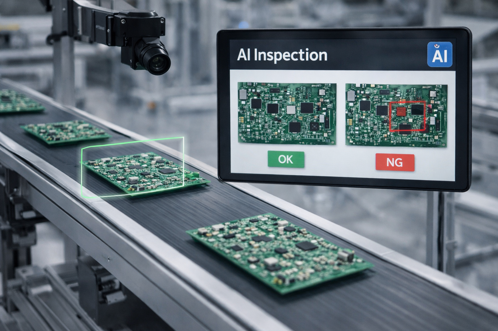
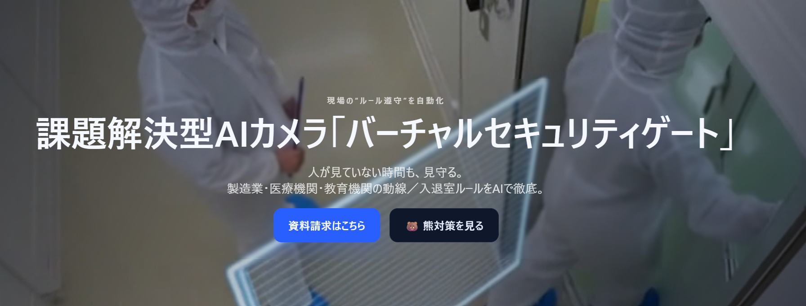
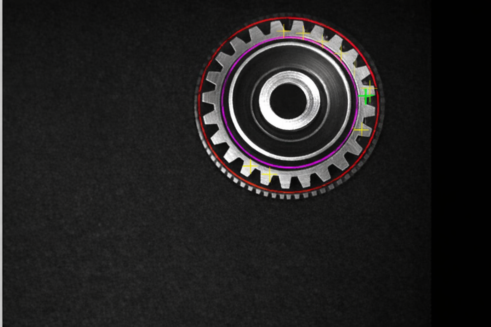

ノウハウの属人化、目視頼りの検品、守られない安全ルール——nanoFACTORYは「作業手順の標準化」「全数AI検査」「エリア入退室管理」の3つをパッケージで提供し、現場の再現性を高めます。
「主力職人が定年で3人抜けた。引き継ぎはしたつもりだったが、その後クレームが増えた。誰の、どの工程が原因かすら分からない。」
独自AIエージェント "VF3.0" が手順書と現場をつなぎ、ノウハウのデータ化からフィジカルAIまで段階的に展開します。

「検査装置は導入した。でも結局、サンプルデータの収集も、装置の設定変更も、判定が怪しいときの最終確認も、全部人がやっている。装置に人が付き添っている状態から抜け出せない。」
AIの自動学習とラインへの組み込み設計により、装置導入後に残る「人手が必要な作業」までまとめて自動化します。

「フォークリフトと作業員のニアミスが月に3件。ヒヤリハット報告書を書くたびに、次は本当の事故になると思う。」
AIが立入禁止区域への侵入を検知した瞬間、音声・映像でリアルタイム警告。「起きる前に止める」安全管理へ。
手書きの自己チェック、目視でのゾーン確認、プロトコルの周知徹底——いずれも「人を信じる」前提の管理です。nanoFACTORYはAIカメラを使い、手指衛生・手順遵守・ゾーン管理を客観データとして自動記録します。
「手洗い記録が紙の自己チェックのまま。監査のたびに形骸化を指摘される。6ステップが本当に実施されているか、確認する方法がない。」
AIカメラがWHO準拠の手洗い6ステップを自動検出・採点・タイムスタンプ付きで記録します。"やった・やらない"が客観データとして残るため、自己申告ベースの管理から脱却できます。感染対策監査・認定取得のエビデンスとしてそのまま提出可能です。
SANI-CAMの詳細を見る「インシデントレポートを見ると、手順の省略・順序ミスが半数以上を占める。ルールは周知しているのに、なぜ繰り返されるのか分からない。」
医療処置・感染対策プロトコルをAIカメラが常時監視し、手順の抜けや順序ミスをリアルタイムで検知・通知します。「知っているが守らない」を「守らざるを得ない環境」に変え、インシデント低減と手順遵守の自動記録を同時に実現します。
このソリューションの詳細を見る
「無菌室・手術室の入室前チェックが本当に徹底されているか、夜間・休日は特に確認できない。問題が起きてもゾーン管理の証跡が残らない。」
カメラとAIで仮想ゲートを設置。入室前の手洗い・着替えが完了していない場合は即座に警告します。24時間365日、人が確認しなくてもルールを徹底でき、入退室ログがそのまま感染管理・安全管理の証跡になります。
VSGの詳細を見るアルバイト依存・高離職率・ベテランシフト偏り——どれも「人が変わると品質が変わる」構造の問題です。nanoFACTORYは「手順標準化」「厨房モニタリング」「提供品検査」をデータ化し、誰が担当しても基準が維持される現場をつくります。
「バイトが辞めるたびにゼロから教え直し。人件費より教育コストの方が問題になってきた。」
調理・仕込み手順をAIが常時監視し、逸脱をその場で通知。新人でも即日一定品質で動けるため、OJTにかかる時間・人件費を大幅に削減できます。HACCP記録の自動生成で、保健所対応も省力化されます。
このソリューションの詳細を見る「厨房内の行動が外から確認できない。不衛生な行為や悪ふざけがSNSに拡散されたら取り返しがつかない。」
厨房を24時間AIが記録・監視。不審な行動・ルール違反をリアルタイム検知し、映像ログを自動保存します。「見られている」という抑止効果が問題行動を未然に防ぎ、万が一のときは映像が証拠になります。バックヤードへの不正入室管理も同時に対応できます。
VSGの詳細を見る「SNSに投稿される写真で評価が決まる時代。盛り付けのバラつきや異物混入が一枚の写真で炎上につながる。」
料理のビジュアル・盛り付け量・異物混入をAIカメラが自動検査。基準を下回る品を提供前に検出し、SNS炎上・クレームを構造的に防ぎます。「映えの均一化」はブランド価値の向上にも直結します。セントラルキッチン・食品製造ラインへの導入で、品質記録のデータ化も同時に実現します。
このソリューションの詳細を見るnanoFACTORYの製品群は、3つの独自技術によって支えられています。
作業手順をカメラで撮影するだけで、AIがその動きを学習・パターン化します。以降は現場カメラが作業者をリアルタイム採点し、ズレがあれば即通知。ベテランが退職しても、学習済みのノウハウが現場に残り続けます。
作業手順解析エージェント — 他社比較
※社内テスト環境における特定作業工程での比較値です。実環境・工程により結果は異なります。
集中力・体調・時間帯によって精度が変わる人の目と違い、AIカメラは24時間・全数を同じ基準で判定し続けます。ミリ単位の傷・汚れ・寸法ズレも見逃さず、判定ログを自動記録。品質トレーサビリティも同時に確保します。

高精度リアルタイム画像処理 — 他社比較
※特定の外観検査条件における実測・比較値です。検査対象・照明・環境条件により精度は異なります。
AIの処理から映像の保存まで、施設内のデバイスだけで動作します。インターネット接続も、クラウドサーバーも不要。映像が外部に送られる経路が存在しないため、情報漏洩リスクはゼロ。月額クラウド費用も発生しません。
エッジコンピューティングシステム — 他社比較
※完全エッジ構成時の比較値です。ネットワーク・保守契約等により費用が発生する場合があります。
デモのご依頼・お見積もりはメールにてお受けしております。
Email: